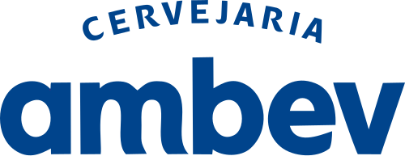

Ferramentas reais do mercado
 Postman
Postman
 Playwright
Playwright
 GitHub
GitHub
 GitHub Actions
GitHub Actions
 VS Code
VS Code
 Node.js
Node.js
Postman
Playwright
GitHub
GitHub Actions
VS Code
Node.js
Cinco noites ao vivo e um sábado intensivo de preparação CTFL — método prático, um produto real para testar e entregáveis prontos para aplicar no trabalho no dia seguinte.
Lote pioneiro · R$ 697 · abertura em 20/06 · enquanto houver vagas
Postman
Playwright
GitHub
GitHub Actions
VS Code
Node.js
Maior portal de tecnologia do Brasil
Conteúdo de referência do mundo de tecnologia
Comunidade ativa e engajada com IA, dev e produto
Cobertura diária de IA, automação e produtividade
Qualidade não pode começar no fim do desenvolvimento. E IA usada sem método amplia risco, repete lacunas e cria falsa confiança. O QA Next existe para resolver os dois lados.
Avaliar risco de produto, revisar requisitos e prevenir defeitos antes de codificar.
Aplicar técnicas fundamentais, critérios de aceite e testes exploratórios com método.
Montar uma coleção no Postman e validar contratos, fluxos e cenários de erro.
Criar seu primeiro teste com Playwright e entender pipeline com GitHub Actions.
Construir uma biblioteca de prompts para QA e um checklist de validação e governança.
Medir sua prontidão com simulados e sair com um plano de estudo de 30 dias.
Um sistema de biblioteca real com cadastro, autenticação, busca, empréstimos, devoluções, área administrativa e atendimento com IA — incluindo requisitos incompletos, riscos e defeitos intencionais.
15 horas de formação aplicada à noite, 6 horas de revisão e simulados no sábado. IA integrada de ponta a ponta.
Fundamentos de qualidade, risco de produto, Shift Left e revisão assistida de requisitos.
Critérios de aceite, técnicas de desenho, testes exploratórios e expansão crítica de cenários com IA.
Estratégia de automação, testes de API, Playwright, GitHub Actions e depuração assistida.
Fundamentos de LLMs, engenharia de prompts, avaliação de saídas, alucinações, vieses, privacidade e segurança.
Agentes, MCP (Model Context Protocol), RAG, Playwright com IA, governança, roadmap de adoção e o desafio integrado (capstone).
Manhã: revisão dos seis capítulos do syllabus oficial v4.0. Tarde: simulado no formato da prova (40 questões cronometradas), correção comentada, clínica de questões e plano individual de estudo.
Cinco noites com instrutor, demonstrações e laboratórios guiados — não é videoaula gravada.
Prompts, dados sintéticos, automação, logs e governança — IA aplicada ao trabalho real de QA.
Playwright, API, Git e visão de pipeline. Você entende o que automatizar primeiro e executa.
O Hub de Leitura integra todas as noites e fecha num projeto final com sistema real e repositório público.
Revisão do syllabus v4.0, simulado no formato oficial da prova e plano de 30 dias para chegar à certificação com confiança.
Privacidade, riscos e governança no centro — IA como copiloto, sempre com validação humana.
Mapa de riscos de produto e checklist de revisão de requisitos
Critérios de aceite, catálogo de cenários e tabela de decisão
Charter exploratório e modelo de relatório de defeitos
Coleção inicial de testes de API (Postman)
Primeiro teste automatizado adaptado com Playwright
Biblioteca de prompts para QA e checklist de validação de IA
Diagnóstico CTFL e plano de estudo de 30 dias
Certificado de conclusão Impacta + gravações por período definido
A CTFL (Certified Tester Foundation Level) é o primeiro nível do ISTQB®, o esquema de certificação em teste de software mais reconhecido do mundo. No Brasil, o exame é aplicado pelo BSTQB.
Ela comprova que você domina o vocabulário, o processo e as técnicas fundamentais de teste — a linguagem comum dos times de QA em qualquer abordagem: cascata, ágil ou DevOps.




Empresas onde profissionais formados pela Impacta atuam · logos ilustrativos


Metodologia própria, certificação reconhecida e professores atuantes no mercado.

Há mais de 35 anos, a Impacta acumula reconhecimentos que validam nossa posição como referência absoluta em educação corporativa e tecnologia no Brasil.
Reconhecida por 10 anos consecutivos pela Revista Gestão RH como o melhor parceiro de educação e capacitação para áreas de RH no Brasil.
Prêmio concedido pela Revista Melhor RH em reconhecimento à excelência de marca e entrega de valor no segmento de educação corporativa.
Prêmio nacional que consolida a Impacta como líder absoluta em formação técnica em tecnologia da informação.
Os lotes avançam por data, do pioneiro até o início da turma. Cada um encerra ao atingir o limite de vagas ou na data final — o que vier primeiro.
Parcelamento disponível no checkout. Inscrições encerram em 02/08 às 18h.
Cinco noites ao vivo, um sábado intensivo e entregáveis que você usa no trabalho na segunda-feira seguinte.
Lote pioneiro · R$ 697 · abertura em 20/06 · enquanto houver vagas